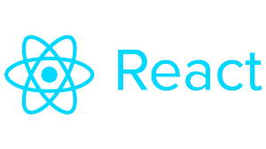

Skills
-
Programming Languages: HTML, CSS, JavaScript

- Frameworks: React, Bootstrap 
-
Tools: Git, VS Code

- Soft Skills: Collaboration, Problem Solving, Attention to Detail
Email: soosungy@uoregon.edu
Enthusiastic front-end web developer student skilled in creating user-freindly, responsive websites. Seeking an internship to apply my skills and contribute to real-world projects.
University of Oregon | Expected Graduation: June 2025
Designed and developed a responsive personal portfolio using HTML, CSS, and JavaScript to showcase my projects and skills
Meta | June 2024 - August 2024